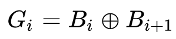
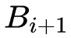
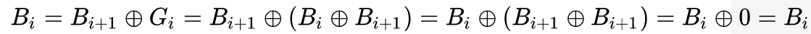
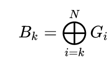

Алгоритм Грея
Код Гре́я — двоичный код, иначе зеркальный код, он же код с отражением, в котором две «соседние» (в упорядоченном, то есть лексикографическом, наборе) кодовые комбинации различаются только цифрой в одном двоичном разряде. Иными словами, расстояние Хэмминга между соседними кодовыми комбинациями равно 1. Наиболее часто на практике применяется рефлексивный двоичный код Грея, хотя в общем случае существует бесконечное множество кодов Грея со значениями цифр в разрядах, взятых из различных алфавитов. В большинстве случаев, под термином «код Грея» понимают именно рефлексивный бинарный код Грея. Изначально предназначался для защиты от ложного срабатывания электромеханических переключателей. Сегодня коды Грея широко используются для упрощения выявления и исправления ошибок в системах связи, а также в формировании сигналов обратной связи в системах управления.
Код Грея назван «рефлексивным» (отражённым) из-за того, что первая половина значений при изменении порядка эквивалентна второй половине, за исключением старшего бита. Старший бит просто инвертируется. При делении каждой новой половины пополам это свойство сохраняется (см. самоподобие). Код назван в честь исследователя Фрэнка Грея, работавшего в лаборатории «Bell labs». Грей запатентовал (патент № 2632058) и впервые использовал этот код в своей импульсной системе связи.
Коды Грея легко получаются из двоичных чисел путём побитовой операции «Исключающее ИЛИ» с тем же числом, сдвинутым вправо на один бит и в котором старший разряд заполняется нулём. Следовательно, i-й бит кода Грея Gi выражается через биты двоичного кода Bi следующим образом:

Обратный алгоритм — преобразование кода Грея в двоичный код — можно выразить рекуррентной формулой:
причём преобразование осуществляется побитно, начиная со старших разрядов, и значение

используемое в формуле, вычисляется на предыдущем шаге алгоритма. Действительно, если подставить в эту формулу вышеприведённое выражение для i-го бита кода Грея, получим

Однако приведённый алгоритм, связанный с манипуляцией отдельными битами, неудобен для программной реализации, поэтому на практике используют видоизменённый алгоритм:
